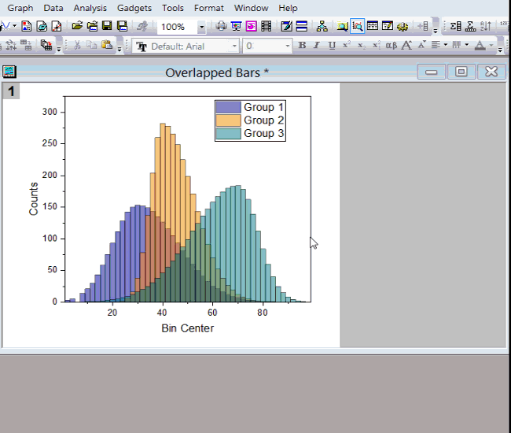

FAQ-650 グラフレイヤのサイズを変更するには？
change-layer-size
最終更新：2019/01/08
2D
2Dグラフのサイズを簡単に調整するには、
- レイヤをクリック(グラフはクリックしません)するか、Altキーを押しながらレイヤをクリックして、レイヤを選択します。
- すると8つのハンドルが表示されます。ハンドルをドラッグして、グラフのサイズを変更します。Ctrlキーを押しながらドラッグすると、縦横比を保持してサイズの変更が可能です。
- サイズを変更すると、灰色のエリアにはみ出すこともあります。デフォルトでは、グラフの白いエリアしか印刷、またはエクスポート、コピーできません。グラフ: レイヤにページを合わせるを選択して、ページサイズをレイヤに合わせます。
- 
- または、レイヤがグラフページより大きいこともあります。グラフ: レイヤをグラフに合わせるを選択して、レイヤサイズをページに合わせます。
Note:
- 2Dグラフのレイヤサイズを正確に調整するには、フォーマット: 作図の詳細（レイヤ属性）を選択し、作図の詳細ダイアログ内のレイヤの大きさ・描画スピードタブのレイヤ領域をカスタマイズします。
- 複数のパネル・レイヤからなるグラフで、レイヤサイズをまとめて変更するには、レイヤをリンクして、レイヤの大きさ・描画スピードタブの単位をリンクされたレイヤの%にします。
3D
レイヤをクリック(グラフはクリックしません)するか、Altキーを押しながらレイヤをクリックして、レイヤを選択します。3Dグラフをある方向でサイズ変更するには、グラフ上のリサイズボタンをクリックし、方向ごとのハンドルをドラッグして変更します。
縦横比を変えずに3Dグラフをサイズ変更するには、
- レイヤをクリック(グラフはクリックしません)するか、Altキーを押しながらレイヤをクリックして、レイヤを選択します。ハンドルをドラッグして、グラフのサイズを変更します。

グラフのレイヤサイズを正確に調整するには、フォーマット: 作図の詳細（レイヤ属性）を選択し、作図の詳細ダイアログ内のレイヤの大きさ・描画スピードタブのレイヤ領域をカスタマイズします。
軸の長さとスケールをリンクさせるときは、レイヤを自由に変更することができません。
キーワード:レイヤサイズ, サイズ変更, 縦横比, 緑のハンドル